Why Advanced Sudoku Strategies Work: One Graph-Theory Rule Behind X-Wing, X-Cycle and Colouring
2026-11-14 · Hyejun Shin
What this is. Advanced sudoku strategies have names like X-Wing, XY-Wing, Skyscraper and Simple Colouring. They are usually memorised as separate tricks. This write-up shows they are one idea, and proves it step by step.
The idea. Treat each candidate (a digit that could still go in a cell) as a dot. Join two dots when the rules forbid both from being true. One counting rule about loops of dots then explains every strategy on the list.
How to read it. Steps 1 to 4 build the idea with pictures. Step 5 walks through more than a dozen named strategies. Step 6 shows where the idea stops working. No maths background is assumed, and each claim comes with a short "why".
Try it. The companion page Sudoku Loop Finder finds these loops in real puzzles and walks through each one, step by step.
1. The idea in one minute
A candidate is one digit in one cell: a digit that could still go there.
Two candidates are linked if the rules say they cannot both be true. Two 5s in one row are linked. So are two digits in one cell.
A link is strong if exactly one of the two must be true. That happens when a cell has only two candidates left, or a digit has only two places left in a row, column or box.
Draw the candidates as dots and the links as lines. A solution marks each dot true or false.
The counting rule. Go round any loop of k dots. The links with both ends false number k minus twice the true dots. So an odd loop always has such a link, and it is never a strong one.
Everything else follows from point 5.
Strong links alone can always be 2-coloured, true against false (Theorem 5.1).
An odd loop with enough strong links forces one candidate to be false (Theorem 5.2) or true (Theorem 5.3).
An even loop with enough strong links turns each of its links into an either-or (Theorem 5.4).
None of the strategies is new, and Section 8 says who found them. What is here is one short proof for all of them. This write-up grew out of an earlier essay of mine.
2. Step 1: Graphs and two colours
A graph is a set of dots (vertices) with lines (edges) joining some pairs. Two vertices joined by an edge are adjacent, or neighbours. All our graphs are finite, and no edge joins a vertex to itself.
A path of length n is a row of n + 1 different vertices, each adjacent to the next.
A cycle of length k ≥ 3 is k different vertices v1, ..., vk in a ring: each is adjacent to the next, and vk to v1. It is odd or even as k is.
A graph is connected if a path joins any two vertices. Its connected pieces are its components. The distance d(u, v) is the length of a shortest path from u to v.
A 2-colouring gives each vertex colour 0 or 1 so that the two ends of every edge differ.
A graph is bipartite if its vertices split into two groups X and Y with every edge running between the groups. That is the same as having a 2-colouring: X is colour 0 and Y is colour 1.

Round a cycle the colours must alternate. That works only when the number of vertices is even. In the odd cycle above, the grey vertex has a neighbour of each colour, so no colour is left for it.
Theorem 2.1 (König). A graph is bipartite exactly when it has no odd cycle.
Why, first half. Suppose a 2-colouring exists and v1, ..., vk is a cycle. Neighbours differ, so vi has the colour of v1 exactly when i is odd. But vk is adjacent to v1, so their colours differ, and k is even.
Why, second half. Suppose there is no odd cycle. No edge joins two components, so we can colour one component at a time. Assume the graph is connected and fix a vertex r. We need two facts about distances from r.
(D1) Adjacent vertices have distances from r that differ by at most 1.
(D2) On a shortest path from r, the vertex in position i is at distance exactly i.
Both rest on one remark. A walk is like a path but may repeat vertices. A walk of length n from x to y shows d(x, y) ≤ n: keep cutting out the stretch between two visits to the same vertex until none repeats.
For (D1), a shortest path to u followed by v is a walk of length d(r, u) + 1, so d(r, v) ≤ d(r, u) + 1. Swap u and v for the other direction. For (D2), the first i steps form a path, so the distance is at most i. A shorter route to that vertex, followed by the rest of the path, would be a walk to the end that beats a shortest path.
Now the proof itself.
Colour each vertex by its distance from r: even distance colour 0, odd distance colour 1.
Suppose some edge uv has both ends the same colour. By (D1) their distances differ by at most 1. They have the same parity, so they are equal. Call the distance n.
Take shortest paths A from r to u and B from r to v. Let w be the last vertex of A that is also on B, at distance j. By (D2), w is in position j on both paths.
If w were u, then u would sit on B at distance n, which is where B ends. So u = v, impossible for the two ends of an edge. Likewise w is not v. So j < n.
Below w the two paths each have n − j ≥ 1 edges and share no vertex. With the edge uv they form a cycle of 2(n − j) + 1 edges. That is odd, against our assumption.
So no edge fails, and the colouring works. ∎
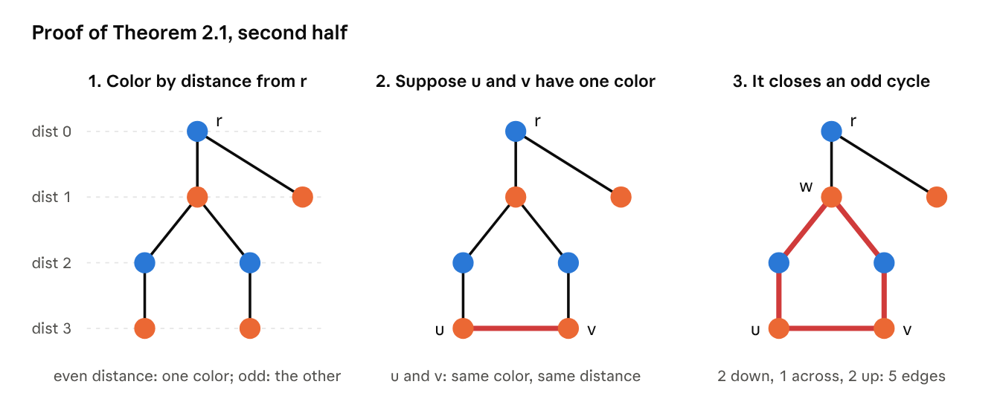
Here w is where the two shortest paths part for the last time. The two branches below w have equal length, so with the edge uv they always close an odd cycle.
Corollary 2.2. A connected bipartite graph has exactly two 2-colourings, and each is the other with the colours swapped.
Why. Fix a vertex r. Along a shortest path from r the colours alternate, so the colour of r decides the colour of every vertex. There are two choices for r, and both work: one 2-colouring exists by Theorem 2.1, and swapping its colours gives the other. ∎
The two colour groups of a connected bipartite graph are its colour classes. A path between two vertices of the same class has even length; between different classes, odd length.
A side note: a graph with no edges needs only one colour. So bipartite means "at most two colours", not "exactly two".
3. Step 2: Sudoku as dots and links
The grid is already a graph. Every cell has 20 neighbours: the other cells of its row, its column and its box. Join each cell to its neighbours and the grid becomes one graph with 81 vertices and 810 edges. Solving a sudoku means colouring that graph with nine digits so that neighbours differ [2].
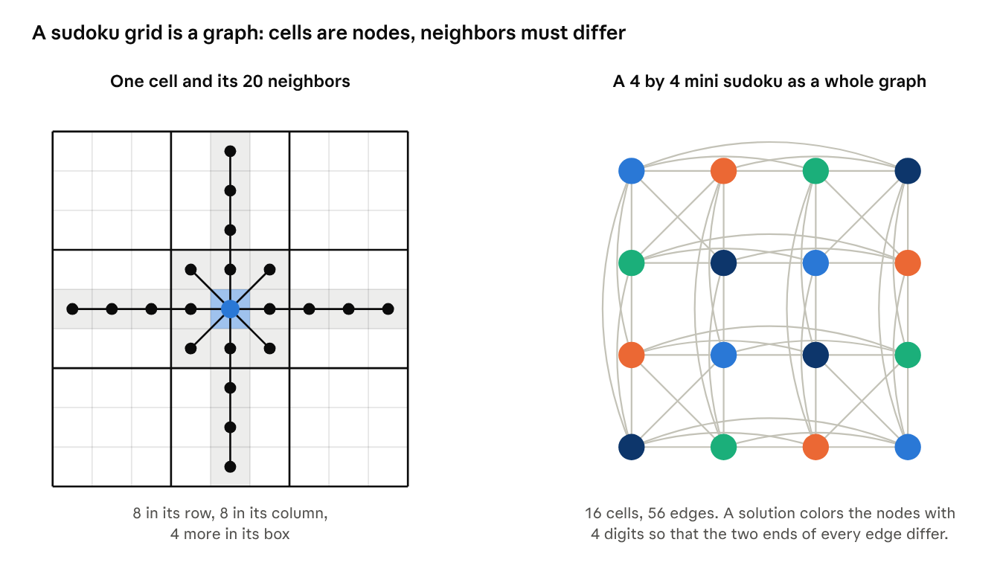
On the left, the blue cell must differ from each of the 20 shaded cells. On the right, the same idea drawn for every cell of a small 4 by 4 sudoku at once: each line means "these two must differ", and the four colours are the four digits.
That graph is too coarse for solving strategies, which are about candidates. So we go one level down and make every candidate a vertex.
Candidates. A candidate is a triple (r, c, d): digit d in the cell at row r, column c. There are 9 × 9 × 9 = 729 of them.
Constraint sets. Each rule of sudoku says "exactly one of these nine candidates is true". There are four kinds, 81 of each, 324 in all:
Every candidate lies in exactly four constraint sets, one of each kind. A solution is a set T of candidates with exactly one member in every constraint set. This is sudoku as an exact-cover problem [5].

States. A state P is the set of candidates still on the grid. Sol(P) is the set of solutions that use only candidates from P, and we always assume there is at least one. For a solution T, a candidate is true if it belongs to T and false otherwise. We write T(u) = 1 or 0.
A candidate can be eliminated if it is false in every solution in Sol(P). Erasing it loses no solution.
Links. Two candidates in P are linked if some constraint set contains both. In practice that means two digits in one cell, or one digit in two cells of the same row, column or box. The link is strong if some constraint set contains those two and no other candidate of P. Otherwise it is weak.
Why draw the links. A link is how a fact about one candidate becomes a fact about another. If a candidate is true, every candidate linked to it is false. If a candidate is false and one of its links is strong, the candidate at the other end is true. Every strategy in this write-up is a chain of such steps, so on the graph each one shows up as a path or a loop.
Two graphs come out of this. The link graph W(P) has the candidates of P as vertices and all links as edges. The strong graph S(P) keeps only the strong links.
In the empty grid every candidate has 28 neighbours in the link graph: the 8 other digits of its cell, and the same digit in the 20 neighbouring cells. As candidates are removed the graph thins out, and strong links appear.

Every dashed line is a weak link: the 7 in this cell and the thing at the other end cannot both be true. The whole link graph of an empty grid has 729 dots like this one.
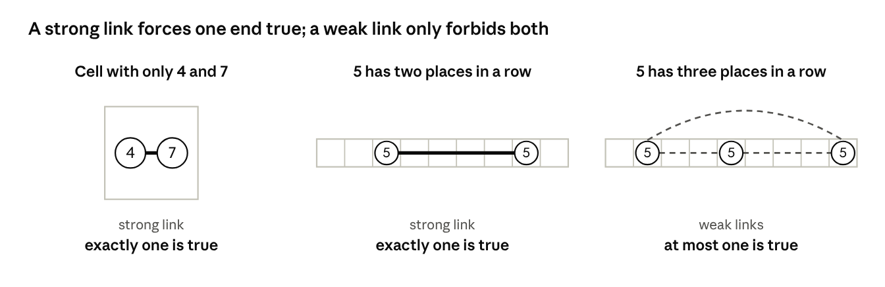
Solvers call the first two pictures bivalue and bilocation links.
Lemma 3.1 (the two link rules). Let T be a solution and uv a link.
At most one of u, v is true: T(u) + T(v) ≤ 1.
If the link is strong, exactly one is true: T(u) + T(v) = 1.
Why. Some constraint set A contains both, and T has exactly one member in A. That gives rule 1. If the link is strong, A can be chosen so that u and v are its only candidates left in P. The one member of T in A lies in P, so it is u or v. ∎
In short: a weak link says "not both", a strong link says "exactly one". Keeping the two apart is what makes everything below work.
4. Step 3: The counting rule
Pick a solution T and a cycle C of length k in the link graph. Count two things on C:
t, the number of true candidates on C;
f, the number of empty links of C, meaning links with both ends false.
Lemma 4.1 (Cycle Lemma).
Why.
No link has two true ends (Lemma 3.1).
Each true candidate sits on exactly two links of the cycle.
So the true candidates cover 2t links, and no link is counted twice. Each of these has exactly one true end.
The remaining k − 2t links have no true end. They are the empty ones. ∎
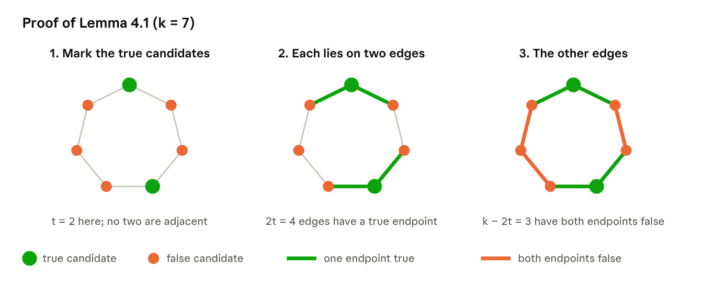
Four things follow at once.
Parity. f is odd when k is odd and even when k is even. So every odd cycle has at least one empty link.
Empty links are weak. A strong link always has a true end (Lemma 3.1).
At most half are true. Since f ≥ 0, we get t ≤ k/2.
Strong links count. If C has m strong links that share no vertex, each has its own true end. So t ≥ m, and f ≤ k − 2m.
Three more examples follow. Green candidates are true, thick links are empty, and f = k − 2t every time.

For readers who know optimisation: rule 3 on an odd cycle, t ≤ (k − 1)/2, is the classical odd-cycle inequality for stable sets [4].
5. Step 4: What a loop forces
From here on, P is a state with at least one solution, and "true" and "false" refer to any one solution. One piece of vocabulary: some links pair up a set of candidates if no two of them share an end and their ends are exactly that set.
Theorem 5.1 (strong links 2-colour). The strong graph S(P) has no odd cycle. In each component K of S(P), with colour classes K0 and K1, every solution makes one class all true and the other all false.
Why. Across a strong link exactly one end is true (Lemma 3.1). So "true or false" is a 2-colouring of the strong graph, and Theorem 2.1 rules out odd cycles. A connected graph has only two 2-colourings (Corollary 2.2): K0 true and K1 false, or the reverse. ∎
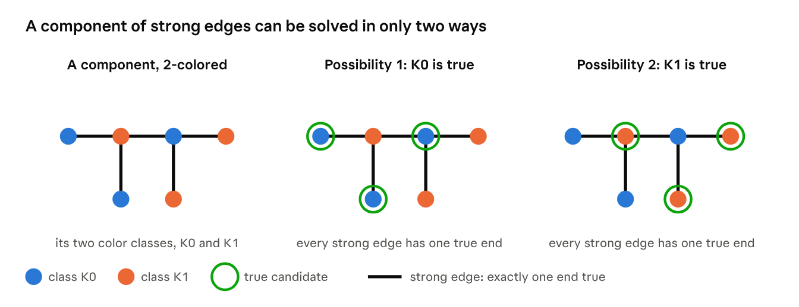
Decide one candidate, and the strong links decide the rest of its component one link at a time.
A useful by-product: if the strong links of your grid ever contain an odd cycle, the grid has no solution. A mistake has crept in.
Theorem 5.2 (an odd loop forces a false). Let C be a cycle in the link graph and v a candidate on it. If strong links of C pair up all the other candidates of C, then C is odd and v is false in every solution.
Why. Say C has length k. The pairing uses (k − 1)/2 strong links, so k is odd. Each of them has a true end, and none of those ends is v. If v were true as well, C would carry (k + 1)/2 true candidates. The Cycle Lemma allows at most k/2. ∎

The same proof as a chain of forced moves: assuming v is true ends with two linked candidates both true.
In this situation exactly one link of the loop is empty. The pairing forces t ≥ (k − 1)/2, the Cycle Lemma forces t ≤ (k − 1)/2, so f = k − 2t = 1.
Theorem 5.3 (an odd loop forces a true). Let v be a candidate on a cycle C, with neighbours a and b on C. If the links va and vb are strong, and strong links of C pair up all candidates other than v, a and b, then C is odd and v is true in every solution. Every candidate linked to v is then false.
Why. The pairing uses (k − 3)/2 strong links, so k is odd. If v were false, a and b would both be true, and each pairing link would add another true end. That makes (k + 1)/2 true candidates, more than the Cycle Lemma allows. ∎
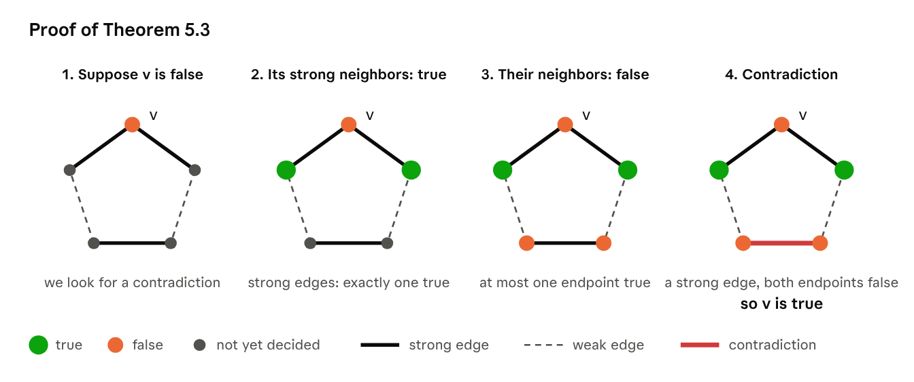
This is the mirror image of the last picture: assuming v is false leaves a strong link with no true end.
Theorem 5.4 (an even loop makes every link either-or). Let C be a cycle whose strong links pair up all of its candidates. Then C is even, and every link of C has exactly one true end. So any other candidate linked to both ends of a link of C is false.
Why. The pairing uses k/2 strong links, so k is even. Rule 4 of the Cycle Lemma gives f ≤ k − 2(k/2) = 0, so no link is empty. A candidate linked to both ends of such a link is linked to a true candidate, so it is false. ∎

Three strong links need three true ends among six candidates, and true candidates are never neighbours. Only the two alternating patterns manage that.
Here are the three loop theorems side by side.
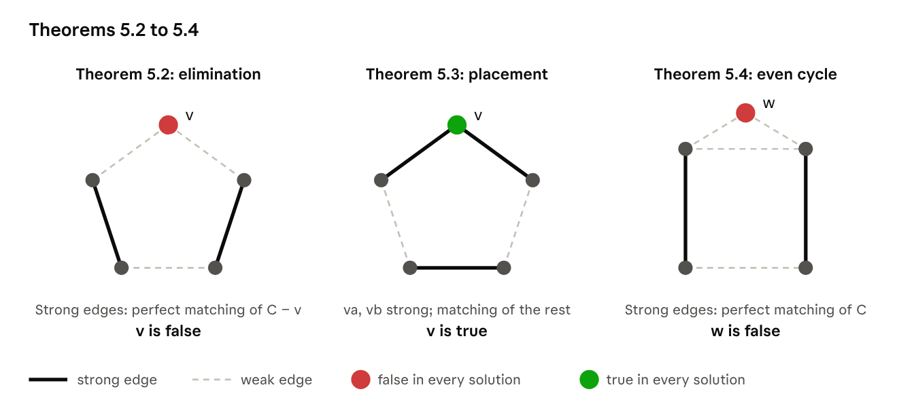
Solid lines are strong links. Dashed lines can be weak or strong.
Corollary 5.5 (the colouring rules). Let K be a component of the strong graph with classes K0 and K1. Let K′ be another component with classes K′0 and K′1.
Wrap. If a link joins two candidates of K0, then K0 is false and K1 is true.
Trap. If a candidate v outside K is linked to a candidate of K0 and to one of K1, then v is false.
Bridge. Suppose a link joins a candidate of K0 to one of K′0. If v, outside both components, is linked to a candidate of K1 and to one of K′1, then v is false.
Double bridge. If links join a in K0 to c in K′0, and b in K0 to d in K′1, then K0 is false and K1 is true.
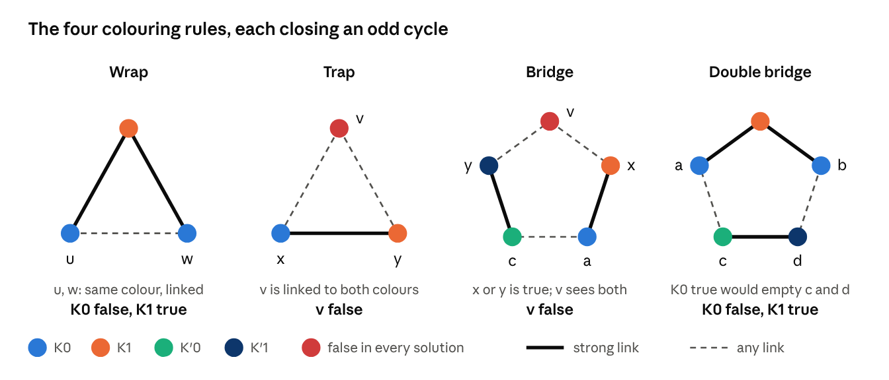
Why. Each rule closes an odd cycle and applies Theorem 5.2. Two facts do the work. Inside a component a path of strong links joins any two candidates; its length is even if they share a class and odd if not. And a path with an even number of vertices is paired up by its 1st, 3rd, 5th, ... links.
Wrap. Say the link joins u and w in K0. A strong path from u to w has even length, at least 2. With the link it closes a cycle. Take away u, and an even number of vertices remain on a strong path, so they are paired up. Theorem 5.2 makes u false, and Theorem 5.1 then settles both classes.
Trap. Say v is linked to x in K0 and y in K1. A strong path from x to y has odd length and misses v. The two links close it into a cycle through v, and the path itself is paired up. Theorem 5.2 makes v false.
Bridge. Say the bridge joins a in K0 to c in K′0, and v is linked to x in K1 and y in K′1. Take strong paths from x to a and from c to y; both have odd length. With the three links they form a cycle through v. Its vertices are all different, because K, K′ and v are separate. Each path is paired up by its own links. Theorem 5.2 makes v false.
Double bridge. If a = b, then a is linked to both classes of K′, so Trap makes a false. Otherwise take a strong path from a to b (even length) and one from d to c (odd length). With the two links they form a cycle. Without a, each stretch has an even number of vertices and is paired up. Theorem 5.2 makes a false. Either way Theorem 5.1 makes K0 false and K1 true. ∎
One more rule needs no strong links at all.
Corollary 5.6 (guardians). Take any odd cycle in the link graph. For each of its links pick a constraint set containing both ends. The other candidates of P in those sets are the guardians. Then at least one guardian is true. So a candidate linked to every guardian is false, and a lone guardian is true.
Why. An odd cycle has an empty link uv (Cycle Lemma, rule 1). The constraint set picked for uv has a true candidate, and it is neither u nor v. So it is a guardian. ∎
6. Step 5: The strategies
Each named strategy is one of the results above, applied to a particular shape of links.
| Strategy | Shape in the link graph | Result used | What it gives |
|---|---|---|---|
| Naked pair | 4-cycle: two cells of a unit, each holding only a and b | Theorem 5.4 | a and b go from the rest of the unit |
| Hidden pair | 4-cycle: a and b each fit only the same two cells of a unit | Theorem 5.4 | Other digits go from those two cells |
| X-Wing | 4-cycle of one digit: two strong links in parallel lines | Theorem 5.4 | Other candidates in the two crossing lines go |
| Swordfish, 2-2-2 form | 6-cycle of one digit: three strong links in three lines | Theorem 5.4 | Other candidates in the three crossing lines go |
| X-Cycle, continuous | Even cycle of one digit, strong links alternating | Theorem 5.4 | Candidates seeing both ends of a link on the loop go |
| X-Cycle, two weak links meet at v | Odd cycle of one digit | Theorem 5.2 | v is false |
| X-Cycle, two strong links meet at v | Odd cycle of one digit | Theorem 5.3 | v is true |
| Skyscraper | 5-cycle of one digit: two strong links in parallel lines that share a line at one end | Theorem 5.2 | A candidate seeing both far ends goes |
| Two-String Kite | 5-cycle of one digit: a strong link in a row and one in a column, joined inside a box | Theorem 5.2 | A candidate seeing both far ends goes |
| Turbot Fish | Any 5-cycle of one digit with two strong links | Theorem 5.2 | The fifth candidate goes |
| XY-Wing | 7-cycle through three two-digit cells: pivot ab, wings ac and bc | Theorem 5.2 | c goes from cells seeing both wings |
| W-Wing | 7-cycle: two cells holding ab, joined by a strong link on a | Theorem 5.2 | b goes from cells seeing both |
| XY-Chain | Longer odd cycle through two-digit cells | Theorem 5.2 | The end digit goes from cells seeing both ends |
| Remote Pairs | An even number of cells in a chain, all holding ab | Theorem 5.2, twice | a and b go from cells seeing both ends |
| Simple Colouring | One component of strong links of one digit | Corollary 5.5, Wrap and Trap | A whole colour, or a candidate seeing both colours, goes |
| 3D Medusa, rules 1 to 5 | One component of strong links across digits | Corollary 5.5, Wrap and Trap | The same |
| Multi-Colouring | Two components of one digit | Corollary 5.5, Bridge and Double bridge | A candidate seeing both far colours, or a whole colour, goes |
| Broken Wing | Odd cycle of one digit with one link not strong | Corollary 5.6 | A guardian is true |
| Alternating Inference Chain | Any cycle mixing digits, strong links alternating | Theorems 5.2 to 5.4 | As above |
The smallest loop of all is a triangle. A candidate that sees both ends of a strong link is false: that is Theorem 5.2 with k = 3. Solvers know it as a pointing pair or a box-line reduction, in the case where the digit has two places.
The worked examples below write candidates as (row, column, digit).
X-Wing. Digit 2 has only two places in column 4 and only two in column 8, in rows 4 and 7 both times. That gives strong links (4,4,2)–(7,4,2) and (4,8,2)–(7,8,2). Rows 4 and 7 link the corners into a 4-cycle, and the two strong links pair it up. By Theorem 5.4 each row link has exactly one true end, so (4,6,2) and (7,5,2) are false.

Steps 2 and 3 are the only two ways to colour the loop, and the red candidates are false in both.
X-Cycle. For digit 8 there are strong links (3,2,8)–(7,2,8) in column 2, (8,3,8)–(8,9,8) in row 8 and (9,7,8)–(3,7,8) in column 7. Links through box 7, box 9 and row 3 join them into a 6-cycle, which the strong links pair up. Theorem 5.4 removes every other 8 from row 3, box 7 and box 9: (3,3,8), (3,9,8), (7,3,8) and (7,9,8).
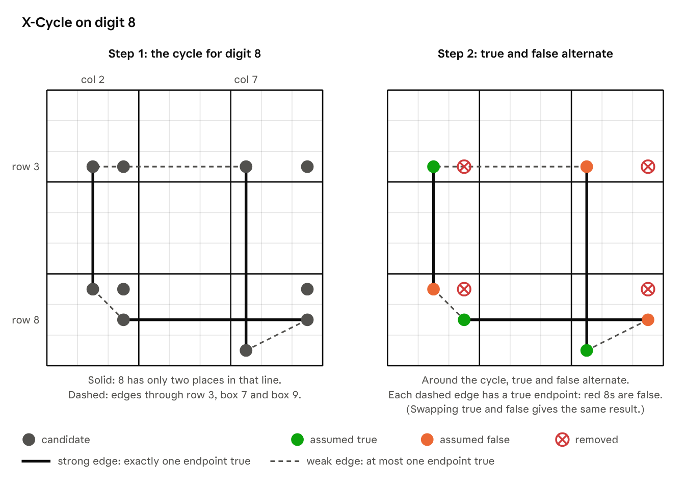
Simple Colouring. For digit 6 the strong links form one chain: (2,2,6), (2,6,6), (1,5,6), (9,5,6), (9,3,6), (5,3,6). Colour it alternately. The candidates (5,2,6) and (6,2,6) are each linked to (2,2,6), of one colour, and to (5,3,6), of the other. The Trap rule makes both false.

Each red candidate closes a 7-cycle with the chain. That is the odd cycle behind the Trap rule.
3D Medusa. The same colouring, except that the chain may hop between digits through cells with two candidates. If two candidates of one colour turn out to be linked, Wrap removes that colour. One caution: colours mean something only inside one component, so a clash in one component says nothing about another.
Multi-Colouring. For digit 2 there is a long chain with classes K0 = {(4,6,2), (9,4,2), (1,5,2), (8,3,2)} and K1 = {(6,4,2), (8,5,2)}. A short chain is the strong link (4,1,2)–(7,1,2). Row 4 links (4,6,2) to (4,1,2), and box 7 links (8,3,2) to (7,1,2). So K0 is linked to both ends of the short chain. Double bridge makes K0 false and K1 true, which places a 2 at row 6, column 4 and at row 8, column 5.

If K0 were true, both ends of the short chain would be false, and a strong link forbids that.
Naked pair. Two cells of a row each hold only 4 and 7. Inside each cell the two candidates are strongly linked. Along the row the two 4s are linked, and so are the two 7s. That is a 4-cycle paired up by the two in-cell links. By Theorem 5.4 the row's 4 and its 7 both sit in those two cells, so every other 4 and 7 in the row goes. A hidden pair is the same loop with cells and digits swapped.
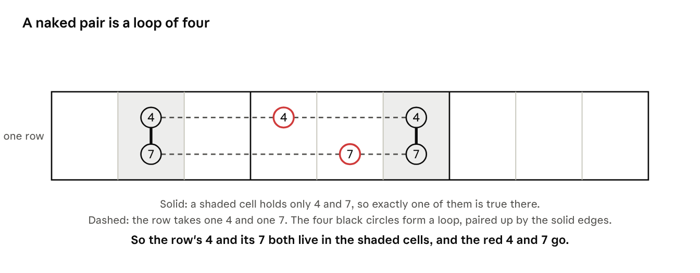
Skyscraper and Two-String Kite. Both are 5-cycles of one digit with two strong links, so both are Theorem 5.2. In a Skyscraper the strong links stand in two columns and share a row at one end. In a Kite one strong link lies in a row, the other in a column, and a box joins them. Any 5-cycle of this kind is called a Turbot Fish.

XY-Wing. Three cells hold the pairs 12, 13 and 23, and the middle one sees both others. Follow the loop: 3 in the first wing, 1 in the first wing, 1 in the pivot, 2 in the pivot, 2 in the second wing, 3 in the second wing. The three in-cell links are strong and pair up six of the seven candidates. Theorem 5.2 removes the seventh, a 3 that sees both wings. W-Wing, XY-Chain and Remote Pairs are longer loops of the same kind.

Broken Wing. Take an odd loop of one digit in which every link but one is strong. By Corollary 5.6 the row, column or box of the odd link out must hold its digit in one of its other cells, the guardians. With one guardian that is a placement. With several, any candidate seeing all of them goes.
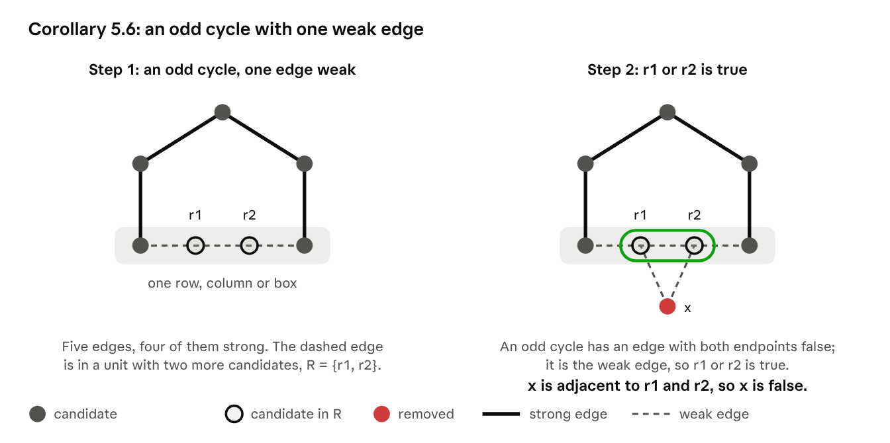
7. Step 6: Where it stops
A loop of weak links alone forces nothing. Start from the empty grid, where every candidate is still possible. First a fact: every candidate is true in some solution. To see it, write r − 1 = 3q + m and c − 1 = 3s + n with q, m, s, n in {0, 1, 2}, and let G(r, c) be the digit with
Along a row, 3s + n runs through 0 to 8. Down a column, 3m + q does. Inside a box, 3m + n does. Adding a constant modulo 9 keeps nine values different, so G is a completed grid. Renaming its digits puts any digit in any cell.
Now take the three 1s in the first three cells of row 1. They form a triangle of weak links, an odd cycle. Yet each of them is true in some solution, so none can be eliminated.
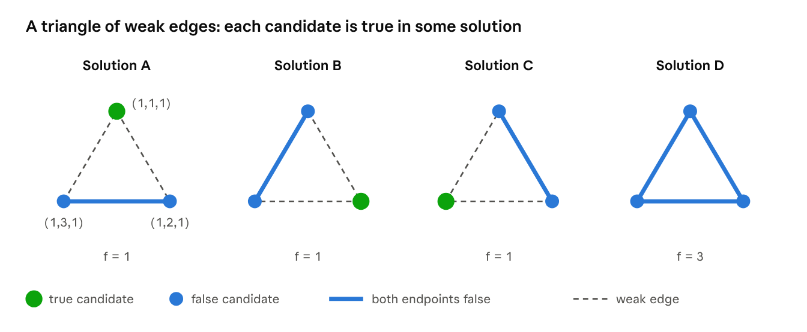
The Cycle Lemma is not broken here: the number of empty links is odd every time. It just does not single out one candidate. Strong links are what pin the answer down. Even loops are the same: four 1s in one row form a 4-cycle of weak links and decide nothing.
Some rules use a whole constraint set. The last two 3D Medusa rules in [8] are of this kind.
Proposition 7.1. Let K0 be a colour class of a component of the strong graph, and A a constraint set. If every candidate of A still in P is linked to some candidate of K0, then K0 is false and the other class is true.
Why. If K0 were true, every candidate of A would be false (Lemma 3.1). But a solution has a member in A. So K0 is not the true class, and by Theorem 5.1 the other one is. ∎
How far can links alone go? Exactly as far as closed alternating walks. Call a true-or-false marking of P link-consistent if it obeys both rules of Lemma 3.1 on every link. Every solution is link-consistent. An alternating walk from u is a sequence u = a(0), a(1), ..., a(n) whose steps are links at even positions and strong links at odd positions. Vertices may repeat. The walk is closed if n is odd, n ≥ 3 and it ends back at u.
Proposition 7.2 (closed walks).
If a closed alternating walk starts at u, then u is false in every link-consistent marking, and so in every solution.
If none does, some link-consistent marking makes u true.
A closed alternating walk with no repeated vertex is exactly the cycle of Theorem 5.2.
Why, part 1. Suppose u is true. A link from a true candidate leads to a false one. A strong link from a false candidate leads to a true one. So a(0), a(2), a(4), ... are all true, including a(n − 1). But a(n − 1) is linked to u, and both are true. Contradiction.
Why, part 2. Let E be the candidates reached from u by alternating walks of even length, u included. Let O be the candidates linked to some member of E.
No two members of E are linked. If e and e′ were, walk from u to e, cross to e′, and return to u along the route to e′ reversed. The crossing is an even step, and the return has its strong links at odd steps. That is a closed alternating walk, of length at least 3 because e and e′ differ. We assumed there is none. So E and O do not overlap.
A strong link from a member o of O leads into E. Extend the walk that reaches o's neighbour in E by o, and then by the strong partner of o.
Take any solution T. Mark E true, O false, and everything else as in T.
Check each link pq. One end in E: the other is in O, and the total is 1. No end in E, one in O: the total is at most 1, and by point 2 the link is not strong. Neither in E nor in O: these are T's values, fine by Lemma 3.1.
So the marking is link-consistent and makes u true. ∎
In logic terms a weak link is the clause "not p or not q", and a strong link adds "p or q". Proposition 7.2 is the classical 2-SAT argument [6] in sudoku clothing.
Proposition 7.3 (a deduction links cannot reach). In some state a candidate can be eliminated, although a link-consistent marking makes it true.
Why. Take every candidate, except that the first three cells of row 1 keep only the digits 1, 2 and 3. The grid G fits, so a solution exists. In any solution those three cells hold 1, 2 and 3 in some order, so the 1 in cell 4 of row 1 is false.
Yet no constraint set has exactly two candidates left. The counts are 3 for the three special cells, 6 for digits 4 to 9 in row 1 and in box 1, 8 for digits 4 to 9 in columns 1 to 3, and 9 for the rest. So there is no strong link, and marking that one candidate true and all others false is link-consistent. ∎
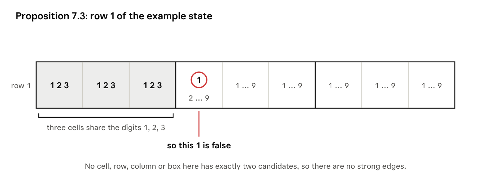
This is a naked triple. It counts three cells against three digits and never uses a strong link.
So the method has a clear edge. Inside it: pairs, wings, kites, chains, loops and colouring. Outside it: naked and hidden triples, fish with three or more candidates in a line, XYZ-Wing, and chains that treat a group of cells as one node, such as the Empty Rectangle. Those need rules about three or more candidates at once.
8. Has this been done before?
Yes, in pieces. The strategies are well known, and so is the loop view. What I have not found written down is one counting rule that proves all of them.
Sudoku as graph colouring. Herzberg and Murty [2] colour the 81 cells with nine digits. That graph describes what a solution is. It is not the link graph used here.
Bivalue and bilocation graphs. Eppstein [3] builds graphs from the same strong links and reads solving rules off their cycles. His rules use edge labels, not two colours or parity. This is the closest academic precedent.
Colouring. HoDoKu [7] describes Simple Colours, with the names Color Trap and Color Wrap, and Multi Colours, whose two rules are Bridge and Double bridge here. SudokuWiki [8] describes 3D Medusa.
Loops. SudokuWiki [8] notes that a loop with one discontinuity has an odd number of nodes, and states the rules proved here as Theorems 5.2 and 5.3. Sudopedia [9] has the rule that is Theorem 5.4. Barker [10] observes that an odd loop of strong links cannot occur, and describes the guardians of the Broken Wing.
Background maths. Theorem 2.1 is König's [1]. The odd-cycle bound is Padberg's [4]. The 2-SAT method is due to Aspvall, Plass and Tarjan [6]. Berthier [11] treats chains in formal logic.
9. Summary
Candidates are dots. "Not both" is a link. "Exactly one" is a strong link.
Round any loop of k dots, the empty links number k − 2t.
Strong links are never empty, so they 2-colour.
Pair up a loop with strong links and nothing is left to choose. An odd loop decides its leftover candidate; an even loop makes every link either-or.
More than a dozen named strategies are that one fact in different shapes.
Triples and bigger fish need more than links.
References
D. König, Theorie der endlichen und unendlichen Graphen, Akademische Verlagsgesellschaft, Leipzig, 1936.
A. M. Herzberg and M. R. Murty, Sudoku squares and chromatic polynomials, Notices of the American Mathematical Society 54 (2007), no. 6, 708–717. Summary: Plus Magazine.
D. Eppstein, Nonrepetitive paths and cycles in graphs with application to Sudoku, arXiv:cs/0507053, 2005.
M. W. Padberg, On the facial structure of set packing polyhedra, Mathematical Programming 5 (1973), 199–215.
D. E. Knuth, Dancing links, in Millennial Perspectives in Computer Science, Palgrave, 2000, 187–214. arXiv:cs/0011047.
B. Aspvall, M. F. Plass and R. E. Tarjan, A linear-time algorithm for testing the truth of certain quantified Boolean formulas, Information Processing Letters 8 (1979), 121–123.
B. Hobiger, HoDoKu: Coloring techniques.
A. Stuart, SudokuWiki: X-Cycles, Part 2 and 3D Medusa.
Sudopedia, Nice Loop.
A. Barker, Odd Loops, Broken Wings, and Dark Logic.
D. Berthier, The Hidden Logic of Sudoku, Lulu, 2007.